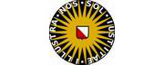

The Institution
Utrecht University, which celebrates its 370th anniversary, has developed into one of Europe's largest and most prominent institutes of research and education. Utrecht University offers the broadest spectrum of disciplines available in the Netherlands, innovative research and liaises with universities and research centres all over the world. Within Utrecht University’s Faculty of Science, the Freudenthal Institute of Science and Mathematics Education (FIsme) focuses on research and development in the domain of the teaching and learning of science and mathematics. FIsme is a national centre of expertise and has a worldwide reputation in the field.
View Website The TeamPaul Drijvers
Paul is an Associate Professor and Senior Researcher on mathematics education and technology who works within in-service and pre-service teacher trainer. He is a curriculum developer and is also member of FIsme management team. Paul has written extensively on the role and use of technology in mathematics education.